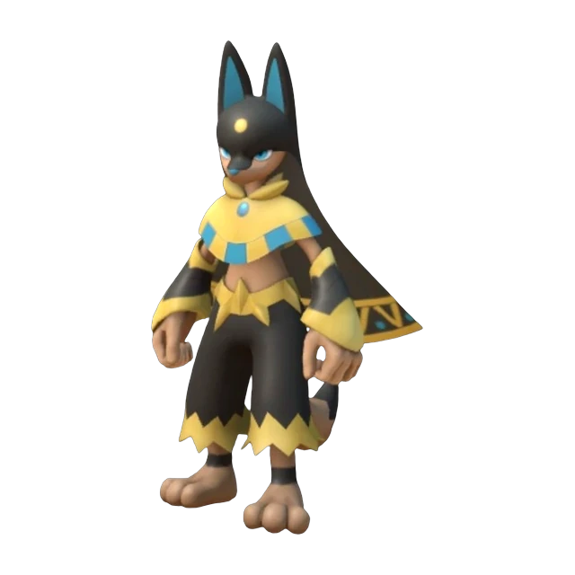
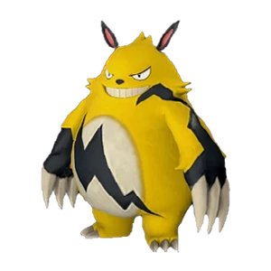
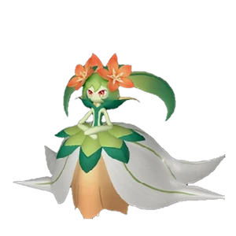
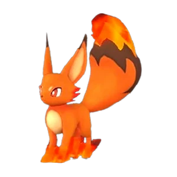

Палы Земля
№139 · Редкость 10
Анубис
ЗемляЛучший ранний рабочий: ручная работа и добыча 6 уровня.
СлабостьТрава
РаботаРучная 6 · Добыча 6
ЯйцоОгромное яйцо земли
Навык партнёраХранитель пустыни

01 · Характеристики
Сильнее всего в атаке
Здоровье
Атака
Защита
Спринт
02 · База
Работа
6Ручная работа
6Добыча
4Транспортировка
5
Дьявольские рукиСкорость работы +90%
4
ВиртуозСкорость работы +75%
3
МастеровитыйСкорость работы +50%
3
ТрудоголикПоказатель рассудка снижается медленнее +15.0%
04 · Разведение
Как вывести
1
Анубис + Анубис (поймай двух в дикой природе)Самый простой путь
2
Менастинг Терра + АйдролонРанняя пара
05 · Похожие
Тоже Земля или ручной труд
№185

Гриззболт
Молния
Генерация энергии 5Ручная работа 4Рубка деревьев 3
120Здоровье
105Атака
105Защита
№186

Лилин
Трава
Посев семян 7Ручная работа 5Сбор 6
120Здоровье
120Атака
110Защита
№29

Фокспаркс
Огонь
Разжигание огня 1
65Здоровье
75Атака
70Защита